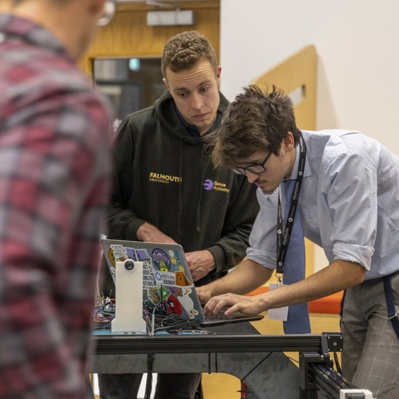
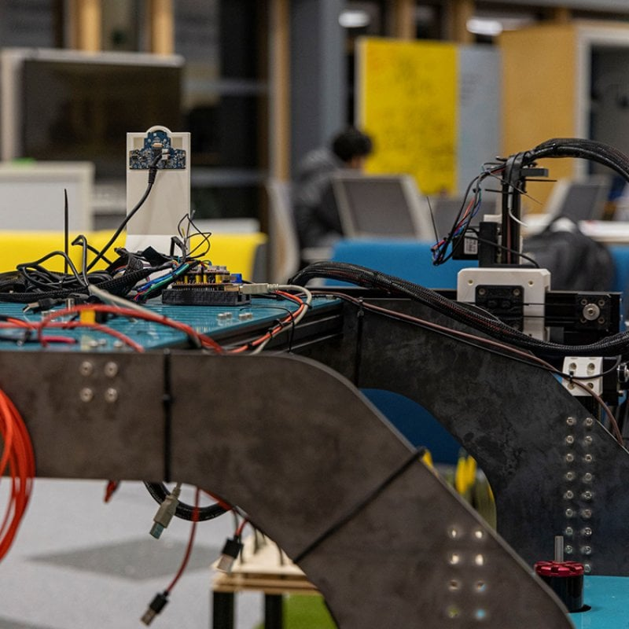
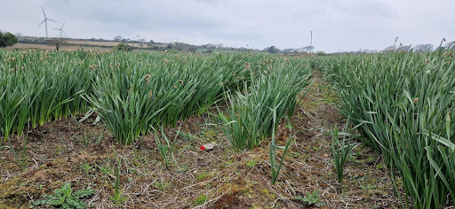

AvoroTech
A daffodil farming robot startup
A daffodil farming robot startup
AvoroTech was a startup focused on developing autonomous robots for daffodil farming. The project involved designing and prototyping robotic systems capable of monitoring and harvesting daffodils efficiently. The goal was to reduce labor costs and increase productivity in the agricultural sector.
I was one of the 4 co-founders of the startup, contributing to both the technical and business aspects of the venture. My responsibilities included overseeing the development of the robotic systems, managing project timelines, and coordinating with team members to ensure successful execution of our goals.
I also played a key role in the fundraising efforts, helping to write grant applications and pitch presentations to secure funding for the startup. This experience provided valuable insights into the challenges and opportunities of launching a tech startup in the agricultural sector.
My role in the project was mainly focused on the programming of the robot's navigation and AI sensor systems. This primarily involved developing what we called the "hunting algorithm" - a method for the robot to autonomously search for and identify ripe daffodils in a field using computer vision and sensor data.
I also contributed to the mechanical assembly of the robot, building based on what the other team members designed. This included integrating motors, sensors, and other hardware components to ensure the robot could operate effectively in outdoor agricultural environments.
Sadly Avoro Tech is no longer active, as we were unable to secure sufficient funding to continue development. However, the experience provided valuable insights into the challenges of developing autonomous agricultural robots and the complexities of launching a tech startup.


